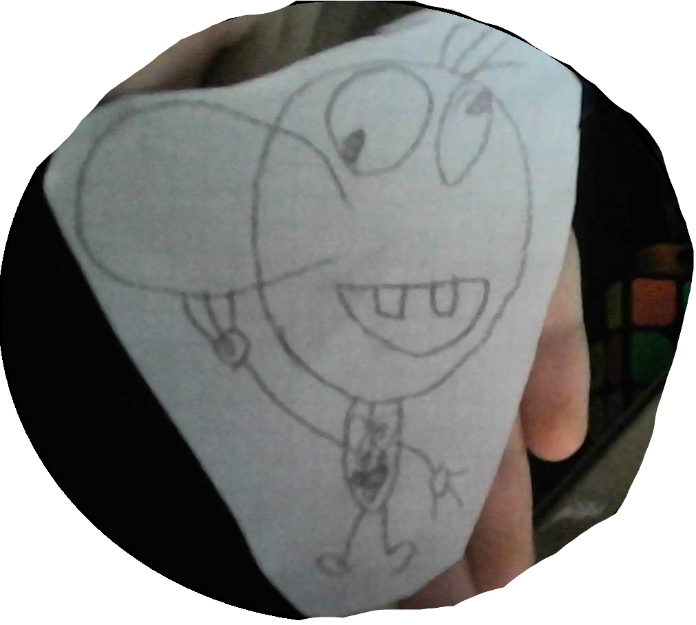

Ponad 12 faktów w 6 kategoriach —
od mózgu, przez serce, aż po zaskakujące osobliwości.
37,2 bln
komórek w ciele
100 000 km
długość naczyń krwionośnych
206
kości u dorosłego
86 mld
neuronów w mózgu
Baza faktów
Zaskakujące fakty o ciele
Filtruj według układu lub narządu i odkrywaj,
jak niezwykłą maszyną jest człowiek.
Mapa ciała
Sześć obszarów do odkrycia
Każdy zakątek organizmu skrywa własne rekordy i osobliwości.
Okiem eksperta

Bob mówi
o tym, jak „zagotować” treść pokarmową w żołądku
„Najpierw musisz się mocno spiąć, żeby poczuć sytość,
a przez ten komunikat twój mózg wysyła impuls do trzustki
i wątroby, by wysłały więcej enzymów do żołądka —
i kwas w żołądku po tym mógłby wyżreć całe ciało.”
To oczywiście humorystyczna wersja Boba -
Na szczęście śluzówka żołądka odnawia się co kilka dni,
więc Bob (i my wszyscy) jesteśmy bezpieczni.
Ciekawostka dnia
Nie połaskoczesz sam siebie
Móżdżek przewiduje ruchy twoich własnych rąk
i „wycisza” reakcję na dotyk.
Dlatego łaskotki działają tylko wtedy,
gdy robi je ktoś inny — twój mózg zawsze wie,
co planujesz.